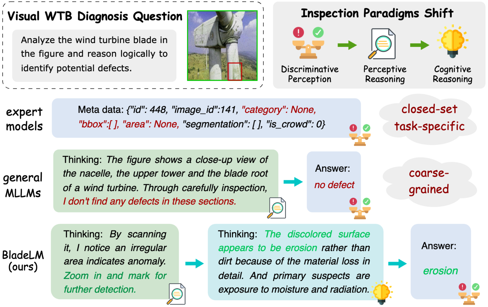
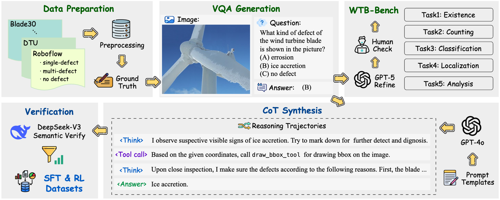
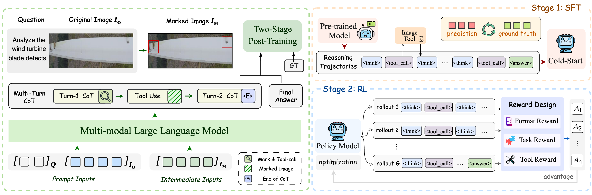
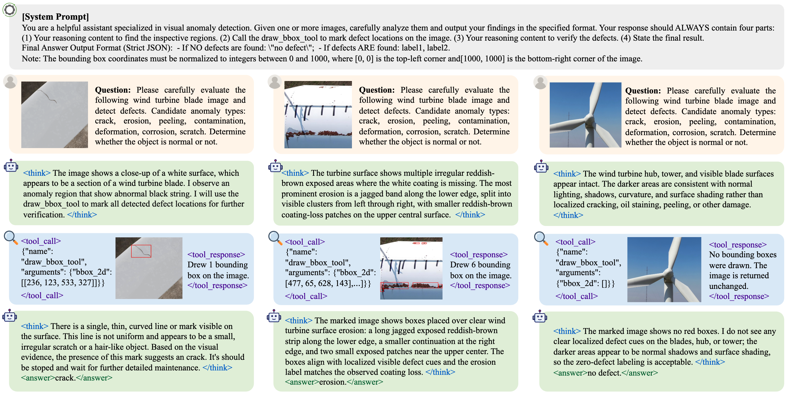

BladeLM: Towards Generalizable, Explainable and Fine-Grained Wind Turbine Blade Diagnosis with MLLMs
Abstract
Wind turbine blade (WTB) images inspection is commonly formulated as closed-set defect detection, which limits its generalization and provides little diagnostic explaination. Although multimodal large language models (MLLMs) offer open-ended visual reasoning, they often miss subtle defects and produce coarse-grained answers in industrial inspection scenarios. To address these limitations, we propose BladeLM, a visual tool-augmented MLLM framework that reformulates WTB inspection as reasoning-driven cognitive diagnosis. BladeLM first inspects the global image, invokes visual tools to acquire localized evidence, and then reasons over observations to produce diagnosis. To train this behavior, we design a data-centric post-training pipeline with 8k curated Chain-of-Thought trajectories for supervised fine-tuning and 4k closed-ended visual question-answering samples with verifiable rewards for reinforcement learning. We further introduce WTB-Bench, a dedicated benchmark covering five subtasks to evaluate MLLMs performance on WTB inspection. Experiments show that BladeLM achieves the best average performance among open-source MLLMs on WTB-Bench, and transfers to the general industrial anomaly benchmark MMAD with 76.96% average accuracy. Under out-of-distribution shifts, BladeLM obtains the smallest average F1 drop of 18.0% among compared methods. Ablation and attention analyses further indicate that our strategy improves spatially grounded diagnostic reasoning.
Motivation

TBD.
Data Pipeline

TBD.
Method

TBD.
Visualization

TBD.
BibTeX
@article{YourPaperKey2024,
title={Your Paper Title Here},
author={First Author and Second Author and Third Author},
journal={Conference/Journal Name},
year={2024},
url={https://your-domain.com/your-project-page}
}